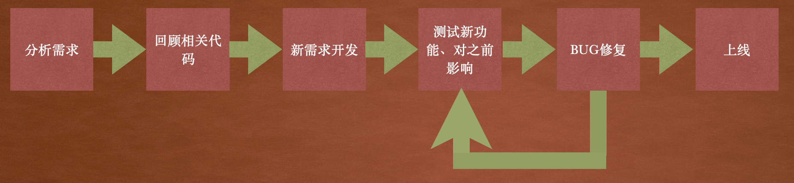
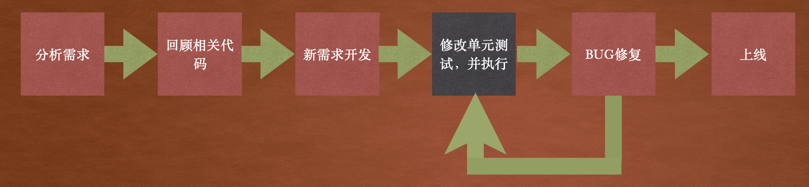

单元测试-高级iOS的必修课
两三年前我就耳闻了iOS的XCTest框架，也听说过单元测试的大名，可一直都没有进行过实践，虽然也看过两篇相关的文章但是并没有在项目中使用过。最近由于一些原因打算试一下单元测试，所以用了大概三天的时间看了N多的文章、教程，并且在公司的项目中对一个类进行了单元测试。
这篇文章就来总结一下自己学到的理论和实践到的经验，总体来说就是单元测试的一篇入门文章。主要内容分为这几个部分：
- XCTest、单元测试是什么。
- 单元测试能带来什么。
- 在实际项目中怎么使用单元测试。
那么，让我们开始吧🇨🇳 两三年前我就耳闻了iOS的XCTest框架，也听说过单元测试的大名，可一直都没有进行过实践，虽然也看过两篇相关的文章但是并没有在项目中使用过。最近由于一些原因打算试一下单元测试，所以用了大概三天的时间看了N多的文章、教程，并且在公司的项目中对一个类进行了单元测试。
这篇文章就来总结一下自己学到的理论和实践到的经验，总体来说就是单元测试的一篇入门文章。主要内容分为这几个部分：
- XCTest、单元测试是什么。
- 单元测试能带来什么。
- 在实际项目中怎么使用单元测试。
那么，让我们开始吧🇨🇳
到公众号【iOS开发栈】学习更多SwiftUI、iOS开发相关内容。
首先说明，单元测试是软件开发中的一门学科（相信你听过说BDD、TDD这些术语），而我还只是一个还没出新手村的玩家。下面说到的方法都是一点入门级的认识，也仅限于iOS开发，如果你还没有入门或者刚入门或许会很适合你，也非常欢迎你能来和我讨论🙏。
XCTest和Unit Test
XCTest
XCTest的定义和功能概述在官方文档中是这样描述的：
Use the XCTest framework to write unit tests for your Xcode projects that integrate seamlessly with Xcode’s testing workflow.
Tests assert that certain conditions are satisfied during code execution, and record test failures (with optional messages) if those conditions aren’t satisfied. Tests can also measure the performance of blocks of code to check for performance regressions, and can interact with an application’s UI to validate user interaction flows.
XCTest是为Xcode的项目提供的一个测试框架，它最大的优势是可以和Xcode无缝衔接。能对对iOS项目进行测试的框架有很多，但是官方推荐的就是XCTest，在创建一个新项目时如果勾选了单元测试，Xcode就会自动生成XCTest的模版代码。
XCTest功能是非常强大的，它可以对业务逻辑进行测试，也可以对用户操作测试，甚至可以通过生成截图来判断多语言是否正常。
A unit test is a way of testing a unit - the smallest piece of code that can be logically isolated in a system.
单元测试
单元测试是对某一段内容进行测试，这一段内容可以是一个类、一个方法，也可以是某个用户行为。
单元测试指明的是测试范围。每段测试代码对应的都是一段内容，而不是内容的全部，所以它不应该依赖这段内容以外的东西，否则就是一个失败的测试。
在XCTest中使用XCTxxxAssertxxx宏来判断是否满足预期，如果不满足预期则测试不通过。
单元测试是对某个单元的行为进行测试，也就是这段代码干了什么。单元测试并不关心具体的实现细节，也就是某段代码是怎么做的。
整个单元测试的过程大概分成三个部分：Given/When/Then。也就是提供条件、执行代码、判断结果。
- (void)testThatItDoesURLEncoding
{
// given
NSString *searchQuery = @"$content$amp;?@";
HTTPRequest *request = [HTTPRequest requestWithURL:@"/search?q=%@", searchQuery];
// when
NSString *encodedURL = request.URL;
// then
XCTAssertEqualObjects(encodedURL, @"/search?q=%24%26%3F%40");
}
提供条件是为将要执行的代码准备参数和执行环境，这个过程在每个单元测试块中应当是完全独立的，并且是和系统、网络、数据库等资源解耦合的。这个解耦的过程非常重要，下面还会具体说明。
执行代码就是调用项目的业务代码中的某个方法，因为单元测试是面向行为的，所以这个方法是一个类暴露出来的方法（OC .h中、Swift中public/protected修饰的）。
判断结果是对预期内容的一个判断，可以是对某个类属性值的判断，也可以是对一个整型、字符串等常量结果的判断。
使用单元测试给我带来了什么
先来看单元测试的几点好处：
- 使重构更简单 —— 你可以自信的修改实现细节，而不用去触及公有 API。
- 避免代码恶化—— 恶化在什么时候发生？在你修改代码的时候。
- 提供了可执行的说明和文档 —— 你在什么时候更想知道软件实际上是如何工作的？在你想修改它们的时候
- 减少了创建软件的时间 —— 怎么减少时间的？是通过更快速地修改你的代码，出错时测试会自信地告诉你哪里出错了
- 降低了创建软件的代价 —— 好吧，时间就是金钱，我的朋友
虽然我用单元测试的时间非常有限，而且写的测试例子也非常有限。但是上面的几点优势却体会颇深，如果你使用过单元测试相信也有同感。
在使用单元测试以前我的工作流程是这样的：

相信大多数开发同学的工作流程都和上图非常类似，在整个过程中几乎每一步都会涉及到之前的代码，在新需求开发过程中要避免影响之前的业务，在测试过程中也要验证有没有影响到之前的业务。
之前的业务通常是复杂的，要想在一两个月以后还能完全了解之前的需求几乎是不可能的，从代码分析也非常困难，你可能都不记得一个月以前的代码里面为什么要使用某个变量了。
而在使用了单元测试以后的工作流程是这样的：

引入单元测试取代了之前的手动测试，有几点好处：
- 减少测试需要的时间。单元测试的执行是非常迅速的，并且对环境（网络、数据库等）的依赖是独立的，不需要为了测试而去按照App的操作步骤创建条件，比如为了测试在Vip下某个按钮的颜色。
- 确保不影响之前的内容。单元测试模版的是使用行为，当需要重新回忆老逻辑时完全可以通过查看单元测试来解决。而由于每个单元是独立的，新开发或者修改的内容只会对对应的单元测试产生影响，而一旦影响到了之前的业务单元测试会执行失败。
- 加快bug修复时间。一个健壮的单元测试可以在开发过程中发现绝大多数的错误和漏洞，这样可以节省下大量的沟通时间。并且单元测试发现bug后并修复后可以快速验证结果，这要比编译、运行代码快上好几个数量级。
使用单元测试
单元测试的5条规则的: F.I.R.S.T.
测试应该：
很快速(Fast) —— 测试应该能够被经常执行。
能隔离(Isolated) —— 测试本身不能依赖于外部因素或者其他测试的结果。
可重复(Repeatable) —— 每次运行测试都应该产生相同的结果。
带自检(Self-verifying) —— 测试应该包括断言，不需要人为干预。
够及时(Timely) —— 测试应该和生产代码一同书写。
这些原则值得被牢记，每当你在写单元测试时都要记着这些原则。不过说实话，为了满足这些原则并不容易，尤其是对于新手（比如我）来说很容易就会走进沟里。
这里推荐看一下Objccn中关于测试的系列文章，其中涉及到了整个测试的流程和对一些议题的讨论。
在这里用一个例子来说一下在实际开发过程中怎么写测试。
在App的登录过程中有一个类LoginManager用来处理和服务端的交互：
// 伪代码
// LoginManager.h
@interface LoginManager: NSObject
- (void)userLoginWithName:(NSString *)userName password:(NSString *)pwd completionHandler:(void (^)(NSError *err))completion;
@end
// LoginManager.m
@implementation LoginManager
- (void)userLoginWithName:(NSString *)userName password:(NSString *)pwd completionHandler:(void (^)(NSError *err))completion {
if (!userName || userName.length == 0 || !pwd || pwd.length == 0) {
if (completion) {
NSError *err = ...;
completion(err);
}
return;
}
UserHttpRequest *request = [[UserHttpRequest alloc] init];
request.url = @"/userLogin";
request.param = @{@"name": userName, @"password": pwd};
[request sendRequestWithSuccess:^{
if (completion) {
completion(nil);
}
}, fail:^(NSError *error) {
if (completion) {
completion(error);
}
}];
}
@end
LoginManager有一个对外的接口userLoginWithName:password:completionHandler:，当用户在界面输入了用户名和密码之后就会调用这个接口并传递对应参数。
在userLoginWithNamexxx接口的实现中先判断了参数的有效性（实际项目可能比这复杂的多），然后使用UserHttpRequest类中的接口来进行实际的接口请求。UserHttpRequest类封装了进行网络请求的公用代码。
下面对这个login接口进行单元测试：
// LoginManagerTests.m
@interface UserLoginManagerTests : XCTestCase
@end
@implementation UserLoginManagerTests
- (void)setup {
}
- (void)tearDown {
}
- (void)testUserLoginWithNameAndPassword {
XCTestExpectaion *expectation = [self expectationWithDescription@"user login request timeout"];
UserHttpRequestTest *httpRequest = [UserHttpRequestTest alloc] init];
LoginManager *login = [[LoginManager alloc] initWithRequest:loginRequest];
NSError *requestErr;
[login userLoginWithName:@"ios开发栈" password:@"123456" completionHandler:^(NSError *err) {
requestErr = err;
[expectation fulfill];
}];
[self waitForExpectationWithTimeout:5 handler:^(NSError *error) {
XCTAssertNil(error);
}];
XCTAssertNil(requestErr);
}
@end
要使用XCTest框架进行单元测试需要继承XCTestCase类，使用Xcode创建一个单元测试类后会默认继承。
下面先来看一些XCTest框架提供的功能和方法：
setUp和tearDown方法是每个测试方法都会执行的，在执行某个测试方法之前会先执行setUp，每执行完一个测试方法后会执行tearDown。
使用test开头的方法是测试方法。testUserLoginWithNameAndPassword是本例中唯一一个测试方法。
在testUserLoginWithNameAndPassword中最后使用了XCTAssertNil来进行判空，如果方法的参数是空则会执行成功，否则执行失败。
上例中由于要对一个异步的网络请求进行测试所以使用了XCTestExpectaion，这是XCTest提供的一个用来测试异步代码的类，当我们测试网络请求、通知等异步操作时都需要用到它。
waitForExpectationWithTimeout的第一个参数是超时时间，如果在超时时间内还没有等到XCTestExpectaion实例的fulfill方法被调用，它的第二个参数handler回调就会触发。也就是说，要么超时，要么fulfill。
接下来看一下对登录接口的具体处理：
首先对实现代码进行分析可以看出，在整个loginxxx的实现中是有一个对外部的依赖的——UserHttpRequest。也就是说仅凭借LoginManager是不足以完成登录过程的，但是在LoginManager的接口中并没有关于UserHttpRequest的依赖。咋一看这并没有什么问题，但是如果将来有一天，由于新的需求需要使用一个其他的xxxxHttpRequest来进行登录操作，现在实现就满足不了了。
为了增强LoginManager的健壮性和可测试性，让我们给它添加一个初始化方法：
// 伪代码
// LoginManager.h
@interface LoginManager: NSObject
- (instancetype)initWithHttpRequest:(BaseHttpRequest)httpRequest;
- (void)userLoginWithName:(NSString *)userName password:(NSString *)pwd completionHandler:(void (^)(NSError *err))completion;
@end
// LoginManager.m
@interface LoginManager ()
@property (nonatomic) BaseHttpRequest *httpRequest;
@end
@implementation LoginManager
- (instancetype)initWithHttpRequest:(BaseHttpRequest)httpRequest {
if (self == [super init]) {
_httpRequest = httpRequest;
}
}
- (BaseHttpRequest *)httpRequest {
if (!_httpRequest) {
_httpRequest = [[UserHttpRequest alloc] init];
}
return _httpRequest;
}
- (void)userLoginWithName:(NSString *)userName password:(NSString *)pwd completionHandler:(void (^)(NSError *err))completion {
...
BaseHttpRequest *request = self.httpRequest;
...
}
@end
首先在.h文件中增加一个对外的接口- (instancetype)initWithHttpRequest:，它的参数类型是UserHttpRequest的父类BaseHttpRequest，这样可以满足随时使用其他的请求类。
.m文件中增加了一个Extension，其中有一个属性是httpRequest，而在初始化方法的实现中给这个属性的实例变量进行赋值。
为了确保httpRequest属性在使用时一定有值，所以添加了一个Getter方法，当外面没有使用initWithHttpRequest:初始化器进行初始化的时候就会使用默认值。
userLoginWithName:xx方法中使用self.httpRequest替换掉了之前的UserHttpRequest。
在对LoginManager进行改造过后，就完全可以不依赖实际的网络请求进行登录的验证了。
添加UserHttpRequestTest类来模拟向服务端发起网络请求：
@interface UserHttpRequestTest :BaseHttpRequest
@end
@implementation UserHttpRequestTest
- (void)sendRequestWithSuccess:(^(void))successBlock fail:(^(NSError *error))failBlock {
NSString *url = self.url;
if (![self.url isEqualToString:@"/userLogin"]) {
NSError *err = ...
if (failBlock) {
failBlock(err);
}
return;
}
NSDictionary param = self.param;
if (param[@"password"].length < 6) {
NSError *err = ...
if (failBlock) {
failBlock(err);
}
return;
}
if (successBlock) {
successBlock();
}
}
@end
在单元测试中使用这样一个模拟请求类可以与服务端的实现分离，而且完全不依赖网络环境，也可以对这个类随时进行修改。
当使用现在的这个网络请求模拟类时上面的测试用例是可以正常通过✅的，如果下一版的需求改成用户输入的密码不能是纯数字，那么我们需要修改模拟请求类使其满足新的需求。修改过后上面的测试用例就不能成功了，而通过单元测试的失败，我们可以及时发现业务逻辑的实现需要调整。这也正是单元测试的魅力所在👍
到这里，请你带着上面的例子回头去看F.I.R.S.T法则，相信会有一个更深的理解。
到公众号【iOS开发栈】学习更多SwiftUI、iOS开发相关内容。
总结
这篇文章对单元测试进行了简单的了解，还针对iOS开发编写单元的必要性和优势进行了分析，最后通过一个例子阐述了怎么使用XCTest框架编写单元测试。
如果你通过这篇文章产生了对单元测试的兴趣，欢迎你立马投入行动。不建议对一些概念进行深究，对于一个新手来说纠结于TDD、Mock、依赖注入（DI）实在是没有必要，等有了一些实践才会对这些概念有所感悟，那时候再深入理论也不迟。
从我工作以来也遇到了很多的iOS开发、安卓开发，但是我没有见过、听过他们中的任何一个人使用了单元测试。通过这几天的学习和使用，我坚信单元测试对代码的稳定性是有非常大的好处的，并且极大的提高了我的自信心和工作效率。
作为一个刚入门单元测试的新手，文章中有很多不足之处，各位姑且看之。
我会把写单元测试纳入我的工作流程，希望你也可以慎重考虑。🏆
参考链接：
iOS Unit Testing and UI Testing Tutorial
Apple XCTest Documentation
Objccn.io 测试